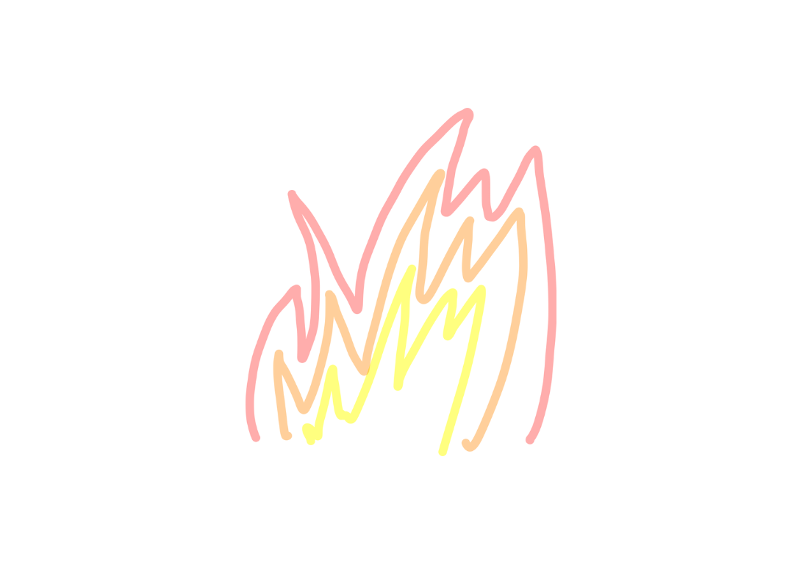
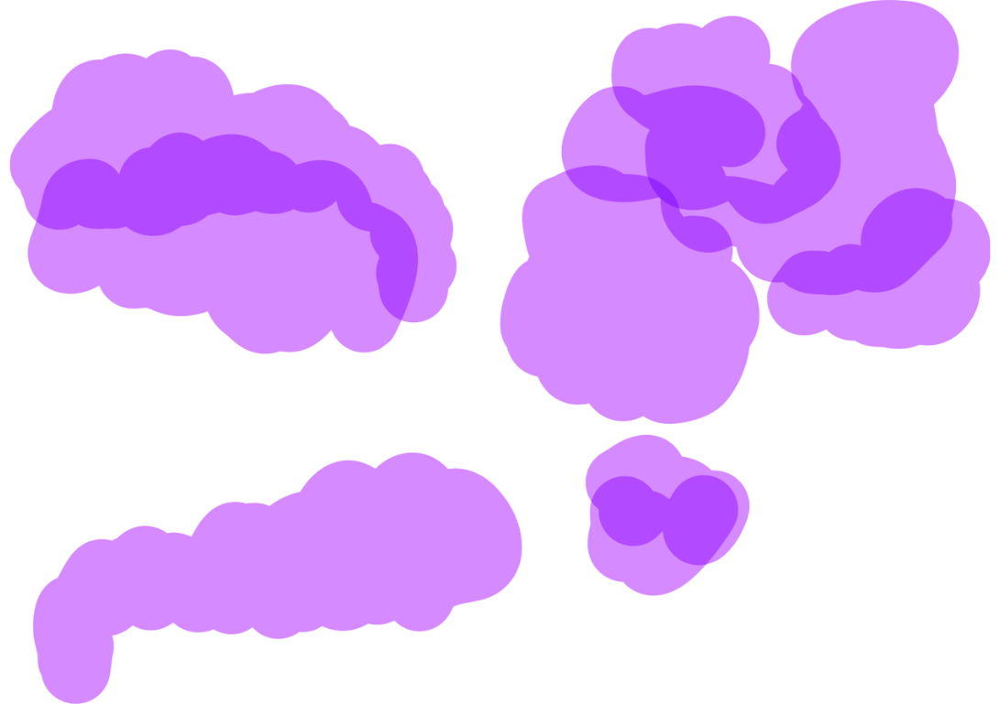
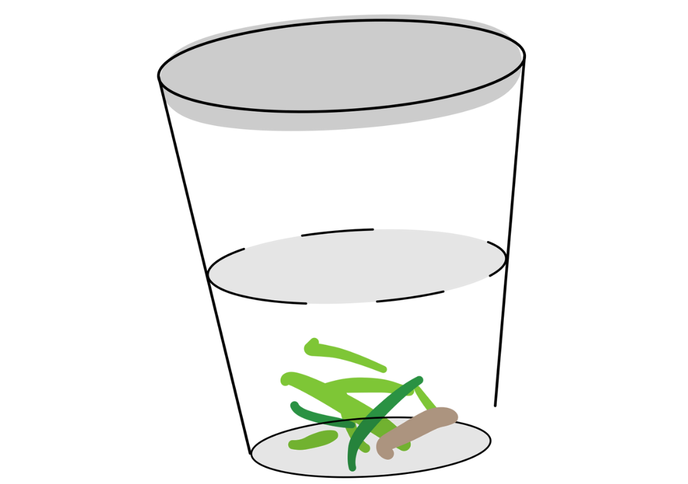

Instructions: As you scroll through this story, hover your mouse over empty spaces to find images or text.
The children’s eyes stare out through the openings of the chain link fence, past a thick forest, and to the tiny sea. Their bodies lean against the green wires as their small bare feet scratch against cement. Paola sees the water splashing against enormous rocks as baby blues start to mix with the darker waters. Paola, the youngest at six (and a half) years old, begs her siblings to go on an adventure with her.
He tries to spot
roaming around the fence wall.
The yard behind them has small clusters of grass closed in by dirt. Perhaps there is golden treasure to be dug up.
Luis’ view has shifted away from the water.
He looks at the bright trees between the fence and the ocean.
Luis cannot identify tree names, but he studies the bright orange flowers that bloom from many of the trees, as if lighting a fire in the little forest. The flowers chase the tree’s branches until reaching the soft, tan colored sand.
Luis, who is nine, is about a year older than Fabian. Luis listens to Paola’s requests.
“
They are not allowed to leave the yard.
Luis explains that, for now, the potion would have to be made with nearby ingredients.
The brew should create a toxic gas that could reach far past the fence and up until the sea, to surely defeat the parasitic bloom of the hot and ripe orange that has infested the branches in the distance.
Paola, thinking she is taking the lead, jumps about a foot down from the fence wall and onto the dirt. She looks up at her brothers with furrowed eyebrows. She struts as her stomach slightly pops out of her pink cotton shirt. She has yesterday’s bandaid on her skinny right knee: a result of tripping on pavement while being chased during tag by Fabian.
“
Luis heads around the yard and into the peach colored concrete house.
In the kitchen. He grabs a cloudy plastic cup.
Luis reaches his hands out to open the sink’s faucet.
He manages to twist the cold water open and fills the cup to its maximum capacity.
He walks out slowly, careful not to catch the concerned attention of his mother on the phone nearby.
With
every
step
towards
the
exit
another drop of water
“
Using his left hand Fabian grabs what he can from the pile. He flushes it out with his right hand, as if sending millions of dollars into the air. Paola’s face turns red. She begins weakly punching at her brother’s torso. Fabian smiles. He pushes his sister away and she begins flailing her arms in protest. Paola, determined to punish her brother, squats down and grips her teeth onto his calf. She pierces into the top layer of skin, leaving a bite mark. He screams as Paola’s tears land on Fabian's new bruise.
As he is exiting the house, Luis hears some commotion. He runs with his cup of water. He approaches his brother and sister with his cup half empty.

Luis places the cup onto a patch of dirt where there are bits of picked grass. After increasing frustration at Paola’s attitude, Fabian pushes her gently, though she falls to the ground where she spills the half empty cup of water.
Paola screams again and rushes into the house. Luis, fearing that this adventure has suddenly halted, runs after Paola. He takes his cup with him, planning to refill the water. Fabian is now alone in the yard. He knows that his mom will come to scowl at him for his attitude soon, but he takes in the silence for a moment. He looks down at his leg, where his sister bit him. His brown eyes drift to the patch of dismembered grass.
A small lizard rushes past the dirt.
The brown scaly lizard has climbed up the cement. His small claws seem to barely hold the lizard in place. His short head holds his strange marble like eyes and ear holes together. The lizard has a short neck, a thicker body, and four legs sticking out. It has a long pointy tail. It crawls around and onto the cement wall. Fabian picks a dry and tall, thin stick of grass. He forms a noose, transforming it into a kind of leash. He chases after the lizard as it maneuvers away up and down the fence. Fabian holds the leash up so that the lizard can walk into its trap. The lizard shuffles frantically until Fabian finally tightens the leash around the lizard's neck. Fabian grabs the lizard with his whole hand, cupping it so that it cannot escape. He jumps around with the lizard in his hand seeing what might happen if he shakes it. He starts out at the fence, debating whether or not to throw it out onto the furious cliff and orange flowers below. Maybe Fabian would be able to launch the lizard far up to the beach, so that it could meet the crabs and birds at the sand.
Fabian could do so much with the lizard. In a spur of the moment, he has a sudden urge to use the lizard as an accessory. He removes the leash and pinches its small mouth open, staring into its dark blinking eyes. Fabian lifts his hand up towards his ear, allowing the lizard to clip onto him. It hangs from his ear lobe like an earring. He feels the lizard’s tight grip slowly loosen.
As he moves, the lizard weakens and lets go of the young boy. Fabian’s new object falls to his shoulder and then
It tries to run.
Fabian, out of a cockroach impulse,
stomps
on the lizard with his right bare foot.
He looks down glumly and nervously wipes his foot off the cement. To try to take his mind off the scaly mess, he looks back out at the fence. Fabian hopes that Luis will return to play, with or without Paola, he doesn’t care.
Perhaps the lizard is a good ingredient for their poisonous potion against the evil on the island. He could say the lizard is a sacrifice. He reflects on the past few minutes, considering looking for another lizard friend. He sits. Luis and Paola walk out. Paola’s face is still red with lines of dry tears gleaming from her cheeks. Luis carries a new cup of water, only a quarter of the water has fallen out now. Paola latches onto Luis.
“
For the meantime though, Fabian can keep playing. Paola slowly drifts back to picking more grass. Luis puts his cup under the hot summer sun.
Fabian, sitting by the fence, pulls off two small twigs from the closest tree. Using the sticks, he lifts the dead lizard. He no longer wants to touch the lizard with his hands, yet he still carefully carries it over to the cup of water. Fabian slowly dumps the lizard into the cup while Luis helps Paola pick her grass. Fabian dunks the lizard, swirling the lizard with his sticks. He keeps it there and walks towards Luis and Paola, who have practically finished building on their new grass pile. With Paola’s approval, Luis grabs a handful of pickings and moves towards their cauldron. He sees something in the water.

“
Fabian does not know how to tell him what has happened.
Luis picks the cup up and smells it. He does not understand.
“
Fabian looks around at the floor looking to find another piece of grass to fashion into the leash. Fabian quickly creates two new leashes for the siblings to use.
He hands them the dry grass and fastens a new one for himself. They watch as he searches for a brown lizard. He cannot find a new one.
“
Perhaps all the lizards were part of the orange fire monster tormenting the island.
Paola and Luis’s mouths widen. Paola’s eyes tighten as she starts to screech. Luis, disgusted, kicks the cup and throws all the contents out.
 The water from the cup bleeds out forming a small puddle. The dead lizard seems to swim in the tiny sea.
The water from the cup bleeds out forming a small puddle. The dead lizard seems to swim in the tiny sea.
Notice: The author does not condone any forms of animal cruelty.